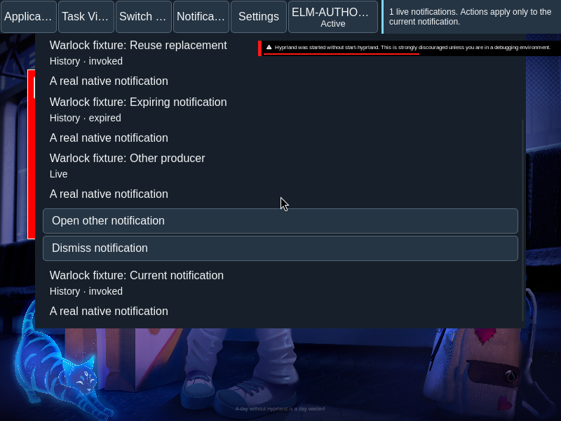
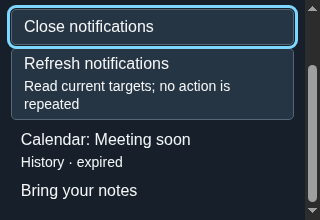
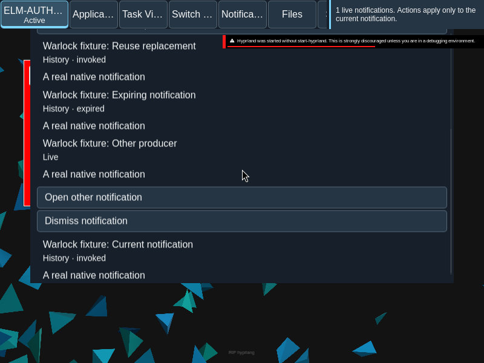

Notifications
Read current notifications and their history in one shell surface.
Overview
Read current notifications and their history in one shell surface.
Anatomy
A producer and summary lead each entry, followed by optional body text and producer-provided actions. History retains the lifecycle of expired, invoked, dismissed, closed, disconnected, unknown and unavailable entries.
States
Live actions belong to their producer. A focused action whose target expires remains focusable with unavailable wording and cannot activate. Do not disturb and critical interruption are independent session controls; critical interruption requires consent and do not disturb to be off.
Specimen
Real Elm interface. Simulated desktop. Client interiors are fixtures.
Behavior
Refresh reads current targets. Unknown means the result is unconfirmed and the action is not repeated. Do not disturb preserves history and suppresses notification speech.
Accessibility
Each live notification exposes its own actions and dismiss control. If a focused action expires, retain its focusable position with unavailable wording so the user can understand why activation no longer works. The designated announcement surface speaks arrivals and relevant expirations; this static page does not duplicate those announcements.
Content
Show the producing application, summary and body with the entry’s current state. Expired, invoked, dismissed, closed, disconnected, unknown and unavailable entries are history, not live action targets. A dispatched action was sent to its producer; it does not claim the producer completed the work. A refused or unknown action is not automatically repeated.
Do not disturb and critical interruption are session controls. Do not disturb suppresses notification speech while preserving history. Critical interruption requires explicit consent and operates only while do not disturb is off. Changing either control does not replay suppressed history.
Evidence



Captures show the running interface; they are not simulated fixtures.
View Notifications source on GitHub (external reference).